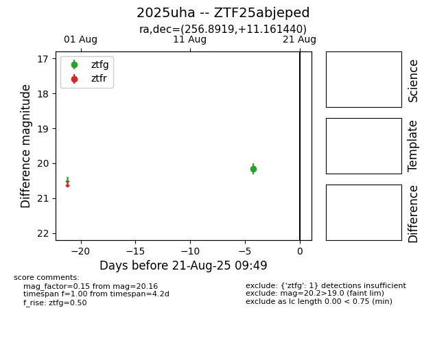

Target 2025uha at 2025-08-21 09:49, see:
FINK: fink-portal.org/ZTF25abjeped
Lasair: lasair-ztf.lsst.ac.uk/objects/ZTF25abjeped
ALeRCE: alerce.online/object/ZTF25abjeped
TNS: wis-tns.org/object/2025uha
YSE: ziggy.ucolick.org/yse/transient_detail/2025uha
alt names
ZTF25abjeped (ztf,alerce)
2025uha (tns,yse)
coordinates:
equatorial (ra, dec) = (256.8919,+11.16144)
galactic (l, b) = (31.3991,+28.07246)
photometry
last ztfg=20.16
1 ztfg detections
